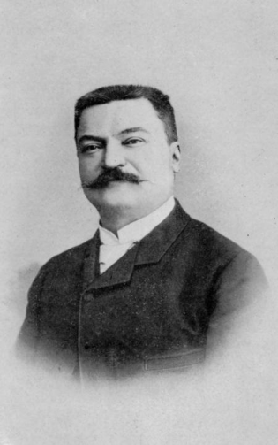

 Il rompicapo delle Torri di Hanoi fu inventato nel 1883 dal matematico francese Édouard Lucas. Secondo una leggenda, in un tempio indù sacro nella città di Benares (l’attuale Varanasi, in India), i monaci stanno cercando di spostare 64 dischi d’oro da una torre all’altra, seguendo precise regole divine. Quando riusciranno a completare il compito, si racconta che il mondo finirà. Anche la morte di Lucas, del resto: è avvolta dal mistero e dall'inusuale: pare che al banchetto annuale del congresso dell'Association française pour l'avancement des sciences, a cui stava partecipando, un cameriere fece cadere delle stoviglie e un piatto rotto gli provocò un taglio sul viso. Pochi giorni dopo, lo scienziato muore, a causa di gravi infiammazioni cutanee (probabile setticemìa).
Il numero minimo di mosse è dato dalla formula:
2ⁿ - 1
Dove n è il numero di dischi. Ad esempio:
Il gioco viene utilizzato in vari ambiti:
Le Torri di Hanoi non sono solo un passatempo: rappresentano un perfetto equilibrio tra logica, pazienza e astrazione matematica.